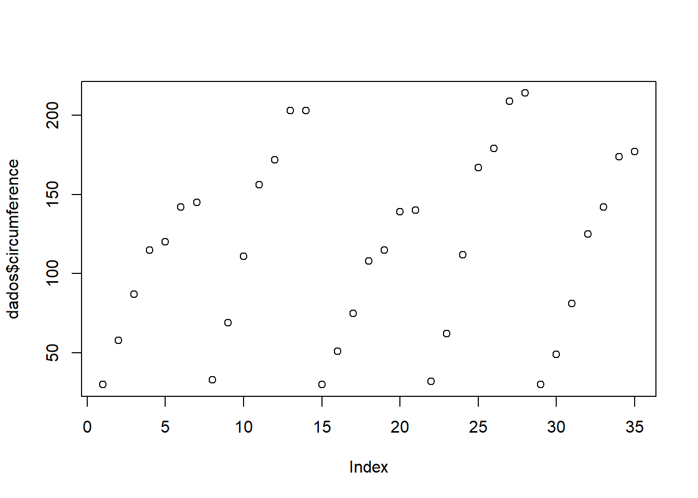
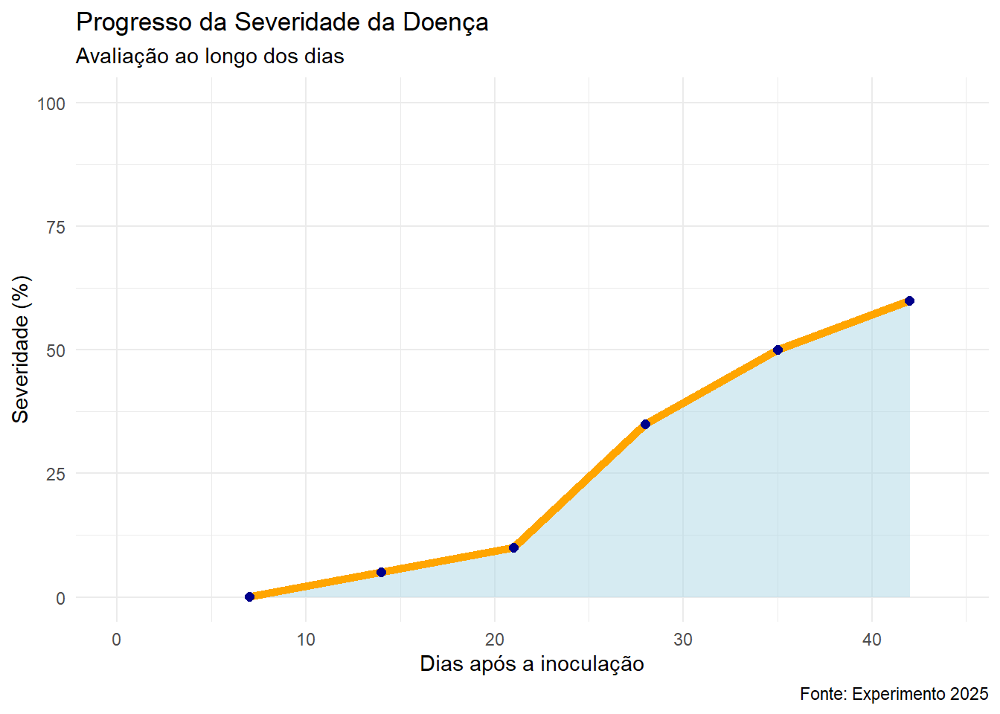

Code
a <- 1
a [1] 1Code
b <- 2
b[1] 2Code
c <- a+b
c[1] 3Neste chunk temos um exemplo de como criar objetos onde serão atribuidos valores.
Para criar objetos, inicialmente criamos um nome para o objeto, seguido dos simbolos “<-”, que é um sinal de atribuição. No exemplo abaixo criamos o objeto “a”, onde a recebeu o valor 1.
a <- 1
a [1] 1b <- 2
b[1] 2c <- a+b
c[1] 3um * deixa em itálico ou (Ctrl+i); para negrito (Ctrl+b); para inserir link (Ctrl+k); para inserir novo chunk (Ctrl+alt+i); usar “” para sinalizar que é texto e não uma função.
Para explicar mais funções iniciais, vamos importar um conjunto de dados do próprio R.
No exemplo abaixo vamos criar o objeto “dados” e usando a função que vimso acima, vamos atibuir a ele o conjunto de dados Oranje, que são dados agrupados de um conjunto de dados do R.
Orangedados <- Orange
dadosAos objetos ou data frames (conjunto de dados), podemos aplicar funções, para executar ações. Como é o exemplo da função plot(). Esta função é básica do R e serve para plotar gráficos que permitem visualizar os dados de forma gráfica para uma análise visual rápida. Lembre-se que, não basta chamar a função, o seu objeto/data frame deve estar dentro de “()” para que a função seja executada.
plot(dados)
Mas para visualizar os dados de maneira correta é importante saber o que voce precisa/quer visualizar. Ao chamar “dados” podemos observar que o data frame é composto por 3 colunas: Tree, age, circunference. Podemos então utilizar outras funções para nos auxiliar.
plot(dados$circumference) 
plot(dados$Tree) plot(dados$age)
Acima utilizamos o sinal “$”, utilizado para isolar um vetor de dados específico do data frame.
Podemos criar um novo objeto e atribuir a ele o vetor de dados isolado.
Ou, podemos utilizar a função “attach” para desagregar o data frame e criar vetores independentes.
Bônus: a função “detach” é o oposto da função anterior.
circ <- dados$circumference
circ [1] 30 58 87 115 120 142 145 33 69 111 156 172 203 203 30 51 75 108 115
[20] 139 140 32 62 112 167 179 209 214 30 49 81 125 142 174 177#ou
attach(dados)
circumference [1] 30 58 87 115 120 142 145 33 69 111 156 172 203 203 30 51 75 108 115
[20] 139 140 32 62 112 167 179 209 214 30 49 81 125 142 174 177Os chamados “pacotes” no R são um conjunto de funções, ferramentas (ou como vimos acima, dados) prontos, que forma criados (ou já vem no R base). São utilizados para realizar atividdaes especificas no R, como plotar gráficos personalizaveis, como é o exemplo do pacote “ggplot2”.
Inicialmente utilizamos a função “library()”, para ativar/carregar o pacote. Caso o pacote ainda não esteja instalado em sua biblioteca, utilizamos a função “install.packages()” para que o pacote seja instalado.
Neste exemplo ativaremos o pacote “agricolae”, que é uma ferramenta para análise estatistica para pesquisa com experimentos agrícolas.
#install.packages("agricolae")
library(agricolae)
dates <- c (7,14,21,28,35,42)
dates[1] 7 14 21 28 35 42severity <- c (0.1, 5, 10, 35, 50, 60)
severity [1] 0.1 5.0 10.0 35.0 50.0 60.0audpc (severity, dates)evaluation
910.35 #carregando outro pacote de dados/dataframe
data("corn")
str(corn)'data.frame': 34 obs. of 3 variables:
$ method : int 1 1 1 1 1 1 1 1 1 2 ...
$ observation: int 83 91 94 89 89 96 91 92 90 91 ...
$ rx : num 11 23 28.5 17 17 31.5 23 26 19.5 23 ...No chunk acima, além de ativar a biblioteca, criamos um vetor de dados numéricos. Usando a função c(). O vetor de dados armazena uma sequencia de dados.
Para o vetor de dados criado, utilizamos a função “audpc”. Este é um comando do pacote agricolae para calcular a área abaixo da curva sobre severiade de doenças ao longo do tempo.
Depois usamos o comando “str” que é um comando do pacote agricolae que é útil para verificar rapidamente a estrutura de um objeto, especialmente quando se trabalha com conjuntos de dados maiores.
O pacote “tidyverse” possui uma série de funções diferentes, que facilitam o tratamento de dados. Alguns exemplos são: pacotes para importação de dados (readr, readxl), visualização de dados (ggplot2), manipulação de dados (dplyr , tidyr), criação de modelos (tidymodels) etc.
library(tidyverse)
dates <- c (7,14,21,28,35,42)
severity <- c (0.1, 5, 10, 35, 50, 60)
#Juntando dates e severity em um objeto
data_curva <- data.frame(dates, severity)
data_curvastr(data_curva)'data.frame': 6 obs. of 2 variables:
$ dates : num 7 14 21 28 35 42
$ severity: num 0.1 5 10 35 50 60Esta é a função principal do pacote ggplot2, que faz parte do pacote ativado no chunk anterior, tidyverse.
Com ele, vamos construir gráficos editaveis.
É mais uma função do pacote tidyverse, é útil para manipular dados (filtrar, selecionar, agrupar)
library(dplyr)
library(ggplot2)
data_curva |>
ggplot(aes(dates, severity))+
geom_area(fill="lightblue", alpha= 0.5)+geom_line(color= "orange", size=1)+geom_point(color="darkblue", size=2)# explicação de alguns comandos:
#geom_area(fill = "lightblue", alpha = 0.5) muda a cor da área
#geom_line(color = "orange", size = 1) muda a cor da linha
#geom_point(color = "darkblue", size = 2) muda a cor dos pontos
#para adicionar outra variável no gráfico
severity2 <- c(1,10,35,58,70,79)
data.frame(severity2) data_curva |>
mutate(severity2 = c(1, 10, 35, 58, 70, 90)) |> # Adiciona a nova coluna aqui
ggplot(aes(dates, severity))+
geom_area(fill="lightblue", alpha= 0.5)+
geom_line(color= "orange", linewidth=2)+
geom_point(color="darkblue", size=2)+
theme_minimal()+ #muda tema do gráfico
labs(title = "Progresso da Severidade da Doença", subtitle = "Avaliação ao longo dos dias", x = "Dias após a inoculação", y = "Severidade (%)", caption = "Fonte: Experimento 2025")+ #para customizar o gráfico, eixos, títulos e etc
scale_y_continuous(limits = c (0,100))+
scale_x_continuous(limits = c (0, 44)) #para mudar a escala dos eixos
O comando “|>” é conhecido como “pipe” e serve para encadear funções, facilitando a leitura e a organização do código. É útil para manipular dados em sequência, sem a necessidade de variáveis intermediárias. Ele permite que o resultado de uma expressão do lado esquerdo seja automaticamente passado como o primeiro argumento da função no lado direito.
A função “aes()” (aesthetics) é utilizada dentro da função ggplot() para especificar como as variáveis do seu dataset são mapeadas para aspectos visuais, como: Eixos: As variáveis que serão usadas para os eixos X e Y. Cores: A variável que determina as cores dos pontos, linhas ou barras. Formas: A variável que determina o tipo de forma dos pontos (por exemplo, círculos, quadrados). Tamanho: A variável que determina o tamanho dos elementos gráficos.